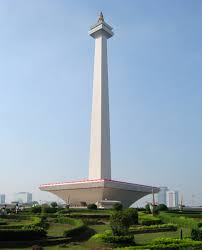

Yakarta
Yakarta, la enorme capital de Indonesia, se ubica en la costa noroeste de la isla de Java. La mezcla histórica de culturas (javanesa, malaya, china, árabe, india y europea) influyó en su arquitectura, su idioma y su gastronomía.

Dominique: En Kota Tua, la ciudad antigua, se pueden visitar edificios coloniales neerlandeses, el barrio de chino Glodok y el antiguo puerto de Sunda Kelapa, donde atracan las tradicionales goletas de madera.
Taman Mini Indonesia Indah es un parque de atracciones ubicado en la ciudad de Yakarta, en Indonesia Se escapa de lo convencional y es realmente entretenido, definitivamente un lugar que debes visitar.
Taman Impian Jaya Ancol , también conocido como Ancol Dreamland, es una parte integral de Ancol Bay City, un destino turístico ubicado a lo largo de la costa de Yakarta, en Ancol Kelurahan, Pademangan, Indonesia. Es propiedad de PT. Pembangunan Jaya Ancol Tbk, una subsidiaria del Grupo Pembangunan Jaya
El Monumento Nacional o simplemente Monas es una torre tipo obelisco de 132 metros en el centro de la plaza Merdeka, a su vez en el centro de la ciudad de Yakarta, que simboliza la lucha por la independencia de Indonesia.La construcción comenzó en 1961 bajo la dirección del presidente Sukarno.
El Café Batavia Es uno de los iconos de Yakarta. Una cafetería de principios del siglo XIX que conserva su estilo original. Lo mejor es que, a pesar de ser uno de los lugares más turísticos de Yakarta, los precios tampoco son desorbitados. ¡Te sentirás como en plena época colonial, pero con una rica y fresca Bintang (la cerveza local) en mano!
La Gran Mezquita Istiqlal Indonesia es el país con el mayor número de personas de religión musulmana del mundo. Aproximadamente, un 80% de la población es musulmana. Así que lo más frecuente es que en tu viaje te despiertes más de una noche con el característico sonido de la llamada al rezo de alguna mezquita cercana. La Gran Mezquita Istiqlal es uno de los templos musulmanes más importantes del mundo y, sin lugar a dudas, la mezquita más importante de Indonesia. Caben aproximadamente unas 120.000 personas y cada año, al finalizar el Ramadán, se llena de fieles que van a rezar juntos.